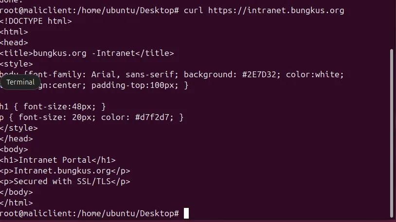
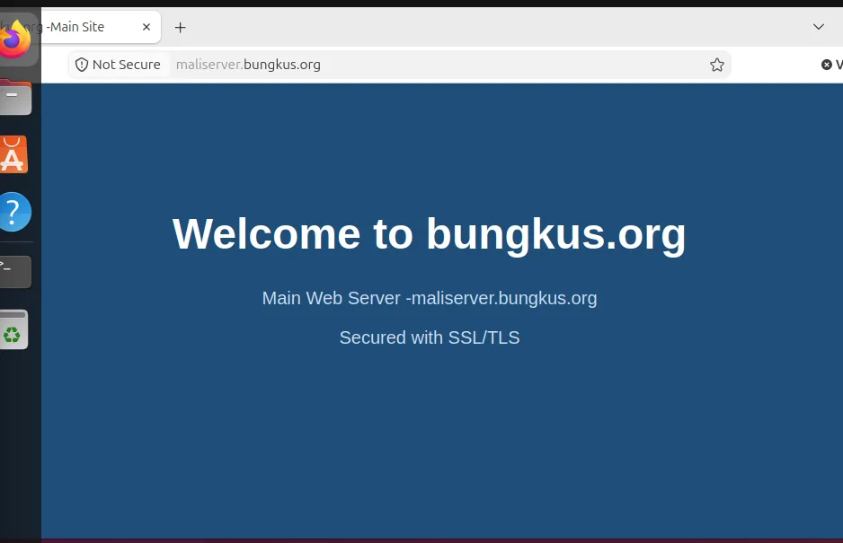

The web server chapter of my SNA assignment asked for two sites on one Rocky Linux machine, both over HTTPS, with plain HTTP redirected. The Apache part is routine. The more interesting problem was trust: why curl and Firefox disagreed about the same certificate. This article walks through the build and ends with that puzzle, because it is a good lesson about how certificate stores work.
Install and open the firewall
I installed httpd and mod_ssl, enabled and started the service, and allowed HTTP and HTTPS through firewalld.
sudo dnf install -y httpd mod_ssl
sudo systemctl enable --now httpd
sudo firewall-cmd --permanent --add-service=http --add-service=https
sudo firewall-cmd --reloadTwo sites, two folders
Name-based virtual hosting means one IP address and one server, but Apache chooses a site by the hostname in the request. I created a folder for each and gave the pages different colours and headings so I could never confuse them during testing: a dark blue "Welcome to bungkus.org" page and a green "Intranet Portal" page.
sudo mkdir -p /var/www/maliserver.bungkus.org
sudo mkdir -p /var/www/intranet.bungkus.orgWhen I ran these commands a stray "bash: 3: command not found" appeared first. I had pasted a list number from my notes into the terminal. It is harmless, but it is a good reminder to read what you paste.
Giving the intranet site a DNS name
The main server name already resolved. For the second site I added one line to the forward zone, intranet IN A 192.168.200.4, raised the serial, validated with named-checkzone, restarted named, and confirmed with dig intranet.bungkus.org. Both names point at the same IP, which is exactly how name-based virtual hosts work. (The zone itself is covered in my BIND9 article.)
A self-signed certificate in one command
sudo openssl req -x509 -nodes -days 365 -newkey rsa:2048 \
-keyout /etc/pki/tls/private/apache-selfsigned.key \
-out /etc/pki/tls/certs/apache-selfsigned.crt \
-subj "/C=MY/ST=NegeriSembilan/L=Seremban/O=bungkus/CN=maliserver.bungkus.org"I checked the result with ls -la: the certificate was mode 644 and the private key 600. The key should never be readable by other users. One caveat: this certificate only names maliserver.bungkus.org, and I reused it for the intranet host. That is fine for a lab. For real use you would issue a certificate that lists every hostname (a SAN certificate) or use a wildcard.
The virtual host file
I put everything in /etc/httpd/conf.d/vhosts.conf. The port 80 block does one thing, a permanent redirect to HTTPS, and two port 443 blocks serve the two sites from their own folders.
<VirtualHost *:80>
ServerName maliserver.bungkus.org
Redirect permanent / https://maliserver.bungkus.org/
</VirtualHost>
<VirtualHost *:443>
ServerName maliserver.bungkus.org
DocumentRoot /var/www/maliserver.bungkus.org
SSLEngine on
SSLCertificateFile /etc/pki/tls/certs/apache-selfsigned.crt
SSLCertificateKeyFile /etc/pki/tls/private/apache-selfsigned.key
</VirtualHost>
<VirtualHost *:443>
ServerName intranet.bungkus.org
DocumentRoot /var/www/intranet.bungkus.org
SSLEngine on
SSLCertificateFile /etc/pki/tls/certs/apache-selfsigned.crt
SSLCertificateKeyFile /etc/pki/tls/private/apache-selfsigned.key
</VirtualHost>Always run sudo apachectl configtest before restarting. It tells you about a bad path or a typo without taking the site down.
Trusting the certificate on the client
A self-signed certificate is not trusted by anyone by default. I copied it to the Ubuntu client with scp, placed it in /usr/local/share/ca-certificates/ and ran sudo update-ca-certificates, which reported one certificate added.
The puzzle: curl is happy, Firefox is not
With the certificate trusted, curl https://intranet.bungkus.org returned the intranet page with no certificate warnings.

But Firefox still showed "Not Secure" on the same URLs.

The server was not at fault. update-ca-certificates only updates the system-wide store that tools like curl read. Firefox keeps its own separate certificate database and ignores the system one. To fix it, import the certificate in Firefox's own certificate manager, or use a certificate from a CA the browser already trusts, such as one from Let's Encrypt on a real domain.
Self-signed or real certificate?
A self-signed certificate gives you the same encryption as any other certificate, but nobody can verify who issued it, which is why every client has to be told to trust it by hand. That is fine for a lab and for internal tools. For anything public, use a certificate from a real CA. Let's Encrypt issues free ones, but it needs a real domain name that points at your server, which a private lab domain like bungkus.org cannot provide.
Quick troubleshooting list
- Wrong site appears: check each
ServerNameand that DNS points the name at the server. - Apache will not start: run
apachectl configtestand read the line number it gives you. - Browser warning but curl works: it is a trust store difference, not a server fault.
- Cannot connect at all: check firewalld for both http and https.